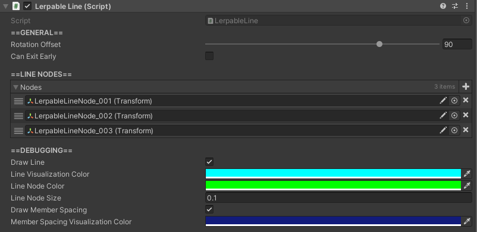

Lerpable Lines

How to Locate
The LerpableLine component is located on the same GameObject as any ProgressionPath or RigidWaypointQueue.
The LerpableLine is required for both these other components.
Settings
| Setting | Description |
|---|---|
| Rotation Offset | Degrees an agent will be rotated relative to the movement direction of the line when it enters the line. |
| Can Exit Early | Toggles whether or not an agent can exit the line early. For ProgressionPaths - Not applicable.For RigidWaypointQueues and free-form queues - Allows agents to exit early if they are some number of spots away from the front of the line, and a shared location is available. |
| Max Exit Early Search |
Only applicable if Can Exit Early is true.Max number of agents that are checked from the front of the line for eligibility to exit early. |
| Nodes | List of references to Line Nodes that define the path. |
| Draw Line | Toggles whether or not the visual that connections the Line Nodes appears. |
| Line Visualization Color |
Only applicable if Draw Line is true.Color of the line connection visualization. |
| Line Node Color | Only applicable if Draw Line is true.Color of the Line Nodes visualization. |
| Line Node Size | Only applicable if Draw Line is true.Size of the Line Nodes visualization. |
| Draw Member Spacing |
Toggles whether or not a visualization showing the spacing between agents currently in the line appears. |
| Member Spacing Visualization Color |
Only applicable if Draw Member Spacing is true.Color of the member spacing visualization. |
Line Nodes
A LerpableLine is simply a path defined by a list of points. Each point is represented by a single Transform on a GameObject that is a child of the GameObject containing the LerpableLine component. Each Line Node is named "LerpableLineNode_???" with the "???" representing the order of the nodes.
However, the name is purely for organizational purposes, as the order of the nodes is determined by the order of the nodes in the Nodes list.
How to Create and Position Line Nodes
To create Line Nodes, simply press the "Add Path Node" button at the bottom of the component. This will automatically create, name, and add the new node to the Nodes list. Then, simply move the node to the desired location.
Position the node to the desired location.
How to Remove Line Nodes
Simply select the node you want to remove and delete it. The Nodes list will automatically update.
How to Change the Order of Line Nodes
The order a agent will progress through a LerpableLine is determined by the order of the nodes in the Nodes list. To change the order, simply drag and drop the nodes in the list to the desired order. This can be done by clicking and dragging three horizontal lines to the left of the node name.
Tips
- Always use the "Add Path Node" button to add new nodes. This will ensure that the node is properly named and added to the
Nodeslist. Creating nodes manually can result in errors if not set up correctly.